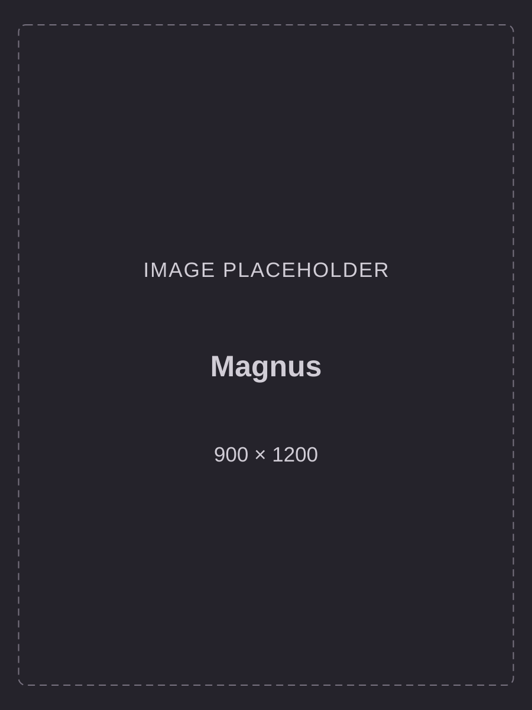
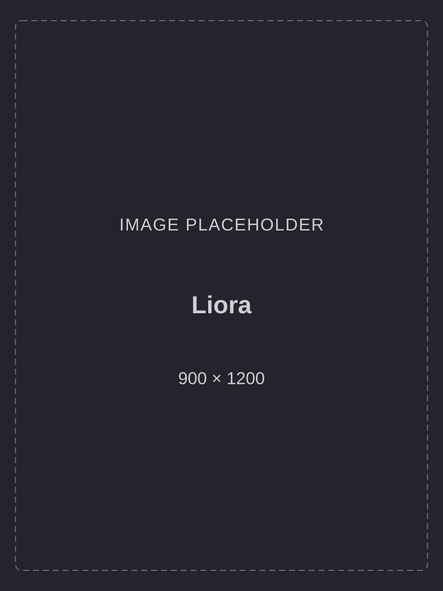
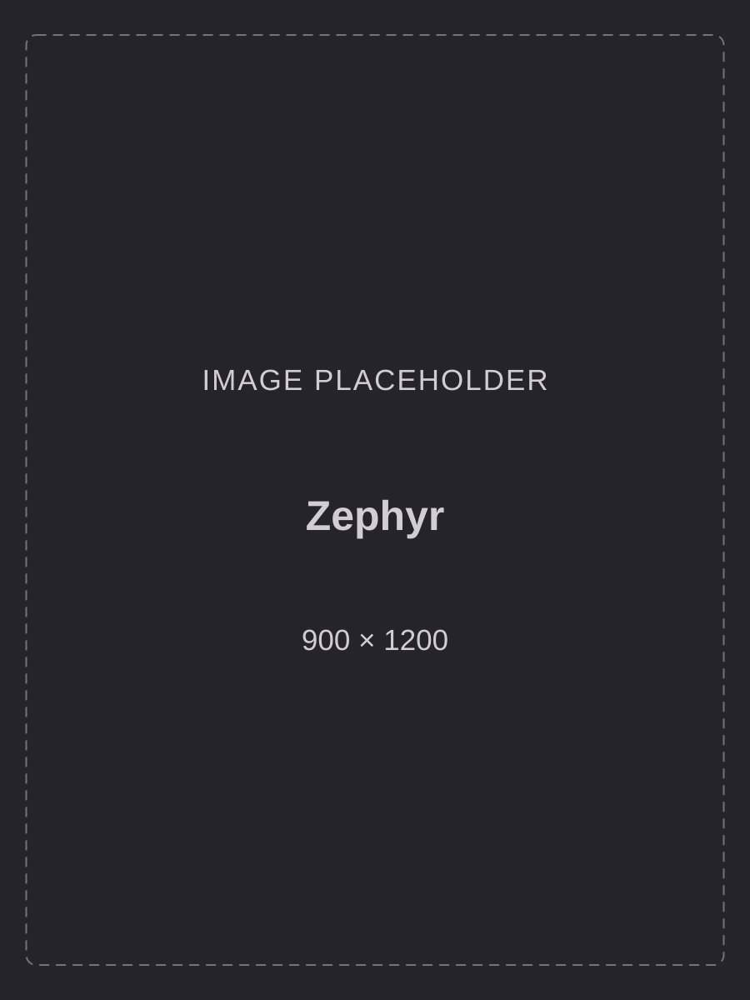
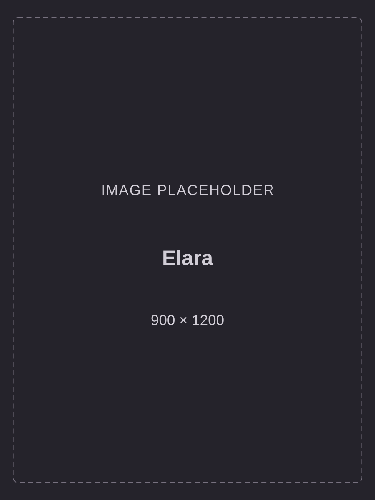

THE PEOPLE
Discover the Delvers.
24 proposed AI workers, each with a professional role, capabilities and explicit boundaries.
Concept blueprint24 proposed Delvers

artifice
Thalos
Generalist engineer
The Artificer
View profile ↗
artifice
Rune
Software developer
The Runesmith
View profile ↗
artifice
Magnus
System architect
The Architect
View profile ↗
enchantment
Veyra
Marketing strategist
The Enchanter
View profile ↗
enchantment
Nyra
Social media specialist
The Whisperer
View profile ↗
enchantment
Liora
Copywriter
The Storyweaver
View profile ↗
illusion
Lyra
Creative designer
The Illusionist
View profile ↗
illusion
Morwen
3D designer
The Sculptor
View profile ↗
illusion
Kairen
Media producer
The Conjurer
View profile ↗
divination
Cyra
Researcher
The Oracle
View profile ↗
divination
Vesper
Data analyst
The Seer
View profile ↗
divination
Zephyr
Market intelligence specialist
The Pathfinder
View profile ↗
alchemy
Mira
Product developer
The Alchemist
View profile ↗
alchemy
Dorian
Manufacturing specialist
The Forgemaster
View profile ↗
commerce
Valen
Sales specialist
The Merchant
View profile ↗
commerce
Auren
Finance specialist
The Treasurer
View profile ↗
commerce
Elara
Customer relations specialist
The Emissary
View profile ↗
abjuration
Kael
Security specialist
The Warden
View profile ↗
abjuration
Aldric
QA specialist
The Sentinel
View profile ↗
chronomancy
Eryx
Project manager
The Chronomancer
View profile ↗
chronomancy
Sylwen
Workflow automation specialist
The Weaver
View profile ↗
lore
Orin
Knowledge manager
The Cartographer
View profile ↗
lore
Vaelis
Documentation specialist
The Chronicler
View profile ↗
lore
Eldrin
Expert advisor
The Sage
View profile ↗No matching Delvers. Try another name, skill or Circle.